<!-- .slide: class="title-slide" data-background-color="#091A31" --> <img src="logo-full-darkbg.png" class="title-logo" alt="BNHR"> <p class="project-context">GEOPTIMIZE 2026 | MORNING SESSION · 2026.09.28</p> # beyond lines<br>and legends <p class="subtitle">the science, design, and politics of cartography</p> <p class="url">bnhr.xyz</p> --- ## ben hur <div style="display:grid; grid-template-columns: 150px 1fr 260px; gap: 40px; align-items:start; margin-top:-16px;"> <div></div> <div> <div style="font-size:26pt; color:#888; margin-bottom:28px;">[open] technology and geospatial consultant</div> <div style="background:#f2f2f4; border:4px solid #0c2340; border-radius:18px; overflow:hidden;"> <div style="display:flex; gap:12px; padding:14px 22px; border-bottom:4px solid #0c2340;"><span style="width:22px;height:22px;border-radius:50%;background:#ff0000;display:inline-block"></span><span style="width:22px;height:22px;border-radius:50%;background:#ffb000;display:inline-block"></span><span style="width:22px;height:22px;border-radius:50%;background:#00e000;display:inline-block"></span></div> <div style="font-family:'Roboto Mono', monospace; font-size:22pt; line-height:1.5; padding:26px 32px; color:#212121;"> <div style="color:#3791e0; font-weight:700;">ben@geoptimize:~$ ./intro.sh</div> <div>> Hi, my name is Ben.</div> <div>> I'm an open technology and digital autonomy advocate.</div> <div>> I also make a living building cool stuff that help people and organizations make the most of open technologies through BNHR, SmartCT, and the Civic Literacy Initiative.</div> </div> </div> </div> <div></div> </div> --- ## ben hur <div style="display:grid; grid-template-columns: 150px 1fr 260px; gap: 40px; align-items:start; margin-top:-16px;"> <div></div> <div> <div style="font-size:26pt; color:#888; margin-bottom:20px;">[open] technology and geospatial consultant</div> <p>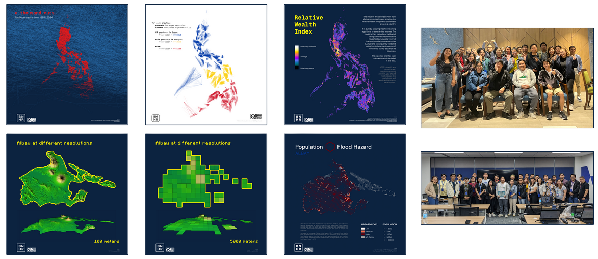</p> </div> <div></div> </div> --- ## ben hur <div style="display:grid; grid-template-columns: 150px 1fr; gap: 40px; align-items:start; margin-top:-16px;"> <div></div> <div> <div style="font-size:26pt; color:#888; margin-bottom:20px;">[open] technology and geospatial consultant</div> <div style="display:grid; grid-template-columns: 1fr 1fr 1fr; gap: 28px; align-items:start;"> <div><div style="background:#0c2340; color:#f5f5f5; border-radius:10px; padding:12px 22px; font-size:21pt; font-weight:700; margin-bottom:14px;">Linux user since 2013</div><p>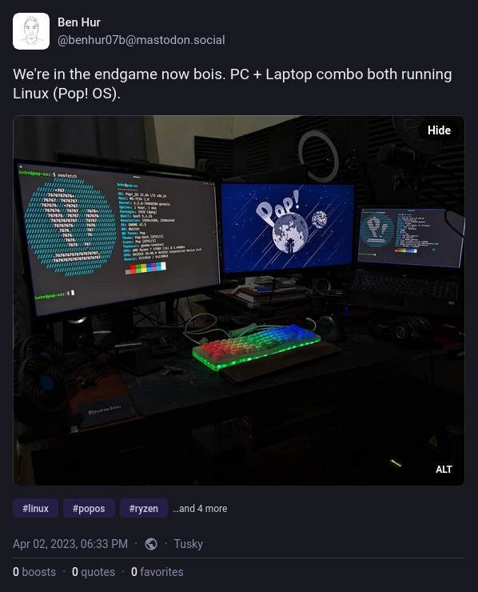</p></div> <div><div style="background:#0c2340; color:#f5f5f5; border-radius:10px; padding:12px 22px; font-size:21pt; font-weight:700; margin-bottom:14px;">/e/ OS, Lineage OS, and GrapheneOS on mobile</div><p>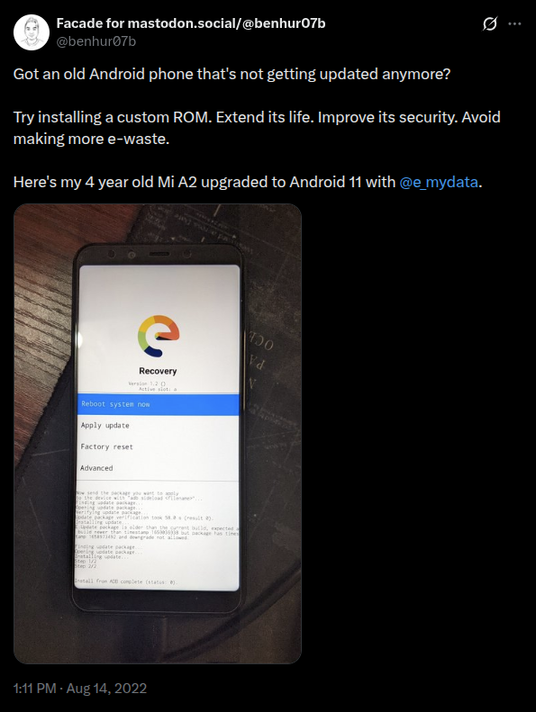</p></div> <div><div style="height:69px; margin-bottom:14px;"></div></div> </div> </div> </div> --- ## ask anytime. interrupt me. - Raise a hand, or just speak. - Disagreements are welcome. - We stop after every part for questions. Nothing waits until the end --- ## contents <!-- .slide: class="toc-slide" --> 1. Maps and power, always 2. No map is neutral: science, design, politics 3. The honest cartographer: science and design 4. Maps as politics, today 5. Who holds the pen now: counter-mapping, platforms, machines 6. Own your maps: open data, caretography, open communities --- ## who's in the room? Tell me, out loud: - What map did you look at this week, and what for? <!-- .element: class="fragment" --> - Have you made one? Paper, phone, QGIS? What was it of? <!-- .element: class="fragment" --> - Name a projection, any projection <!-- .element: class="fragment" --> --- ## exercise 1: draw up diliman <div class="callout"> Index card, pen, no phones. Draw the campus from memory. <strong>Ninety seconds.</strong> </div> - Don't worry about being right - Nobody will grade it - Keep the card. You'll need the other side later --- ## what did you leave out? - Where does your campus end, and who decided that? - What's at the centre of your map? - Who drew Krus na Ligas? Pook Ricarte? Pook Amorsolo? - Who drew a jeepney route? A footpath? A tree? --- ## every map is an argument <div class="callout"> “Maps are neither mirrors of nature nor neutral transmitters of universal truths. They are narratives with a purpose, stories with an agenda. They contain silences as well as articulations, secrets as well as knowledge, lies as well as truth.” <div style="font-size:18pt; color:#888; margin-top:12px;">John Rennie Short, <em>The World Through Maps</em>, 2003</div> </div> Three decisions no map can avoid: **what to show, how to show it, what to leave out.** --- <!-- .slide: class="section-slide" data-background-color="#0c2340" --> <span class="section-label">Part 1</span> # maps and power,<br>always --- ## a map that won an argument, 1854 <div class="content" style="display:flex; justify-content:center; align-items:flex-start;"> <p>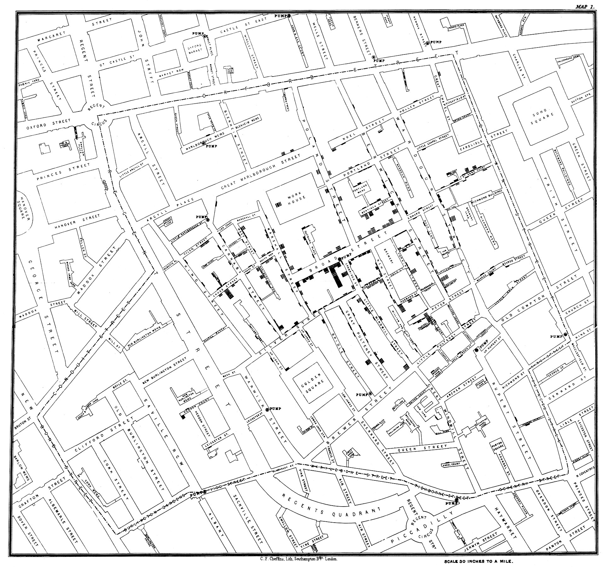</p> </div> --- ## the map came after the argument - The pump handle came off on **8 September 1854**. The map was published in **1855**, in his report - He counted **deaths**, not cases - He placed them at **homes**, not where people fell ill - He drew the pumps, and nothing else that could compete - He left out everything that didn't serve the question **What would you have counted?** --- ## in 2013, strangers mapped tacloban before relief landed - Typhoon Haiyan, 8 November 2013 - Over a thousand volunteers worldwide traced roads and buildings from satellite imagery into OpenStreetMap within days - Responders on the ground printed and used those maps - Nobody owned that map. Everybody did **Whoever holds the map decides where the trucks go. Who held it?** --- ## the philippines was drawn in europe before it was seen <div style="display:grid; grid-template-columns: 1fr 1fr 1fr; gap: 28px;"> <div style="background:#fff; border-radius:12px; padding:24px 28px;"><div class="column-header">1494 · TORDESILLAS</div>A line 370 leagues west of Cape Verde splits the unmapped world between Spain and Portugal. Nobody east of it was asked.</div> <div style="background:#fff; border-radius:12px; padding:24px 28px;"><div class="column-header">1529 · ZARAGOZA</div>The line's other half. These islands fell on Portugal's side. Spain kept them anyway, and named them for a prince in 1543.</div> <div style="background:#fff; border-radius:12px; padding:24px 28px;"><div class="column-header">1898 · PARIS</div>Article III: a box of coordinates, and twenty million dollars. Two islands fell outside the box; the US bought them in 1900 for a hundred thousand more.</div> </div> **A line on a map in Europe decided who owned this room.** --- ## a colonial map, read as a document <div class="two-column split-2-1"> <div class="column" style="background:none; padding:0;"> <p>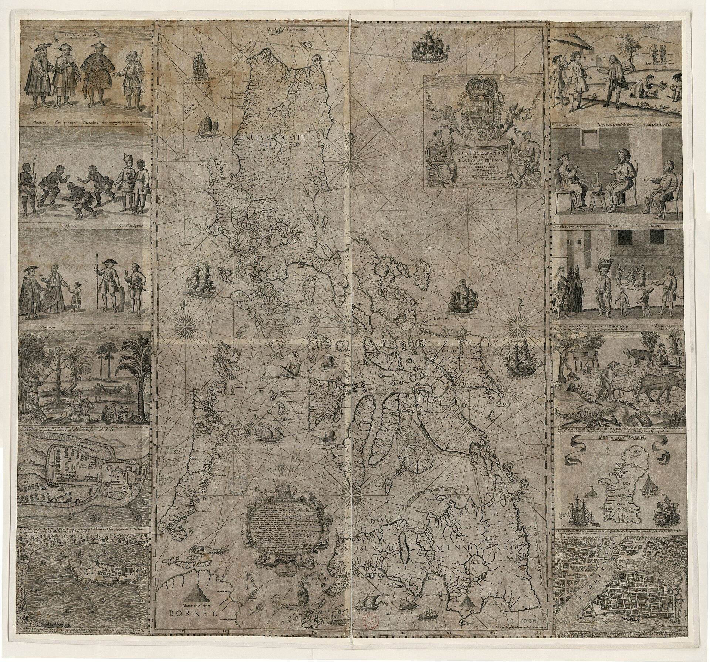</p> </div> <div class="column"> <div class="column-header">Murillo Velarde, 1734</div> Luzon is labelled **Nueva Castilla**. The royal arms sit in the sea. The dedication is to the king. The side panels sort the people into types: Sangleyes, Cafres, Mestizos, Indios. Engraved by a Filipino, **Nicolás de la Cruz Bagay**. Later a Philippine exhibit against China. </div> </div> --- ## "discovered" is a word on a map <div class="two-column"> <div class="column"> <div class="column-header">1521, as taught</div> Magellan **discovers** the Philippines. A word that says the place began when the mapmaker arrived. </div> <div class="column"> <div class="column-header">2021, official</div> The National Quincentennial Committee: not a discovery, not an arrival. The Philippine part in the first circumnavigation. Its own headline: *When our ancestors "discovered" Magellan.* </div> </div> --- ## what's missing is a decision - Cartographer Brian Harley called them **silences**: what a map leaves off says as much as what it keeps - Blank space on colonial maps read as "empty land," and was treated as such - A road network without footpaths says who counts as a traveller - A city map without informal settlements says who counts as a resident **Look at your card. What's silent on it?** --- <!-- .slide: class="section-slide" data-background-color="#0c2340" --> <h1 style="color: #ffa500">questions so far?</h1> --- <!-- .slide: class="section-slide" data-background-color="#0c2340" --> <span class="section-label">Part 2</span> # no map<br>is neutral --- ## science: a map is a model, and models lose things <bnhr-pipeline highlight="Projection, Generalisation, Symbolisation">World, Projection, Generalisation, Symbolisation, Map</bnhr-pipeline> - **Projection**: a sphere onto a flat sheet. Shape or area goes - **Generalisation**: a coastline with fewer points than the coast - **Symbolisation**: a million people become one shade of blue --- ## how many greenlands fit in africa? <div style="display:grid; grid-template-columns: repeat(4, 1fr); gap: 32px; margin-top: 24px;"> <div class="fragment" style="background:#fff; border-radius:12px; padding:40px; text-align:center; font-size:64pt; font-weight:800; color:#0c2340;">1</div> <div class="fragment" style="background:#fff; border-radius:12px; padding:40px; text-align:center; font-size:64pt; font-weight:800; color:#0c2340;">3</div> <div class="fragment" style="background:#fff; border-radius:12px; padding:40px; text-align:center; font-size:64pt; font-weight:800; color:#0c2340;">7</div> <div class="fragment" style="background:#fff; border-radius:12px; padding:40px; text-align:center; font-size:64pt; font-weight:800; color:#0c2340;">14</div> </div> --- ## mercator says 1. the earth says 14. <div class="content" style="display:flex; justify-content:center; align-items:flex-start;"> <p>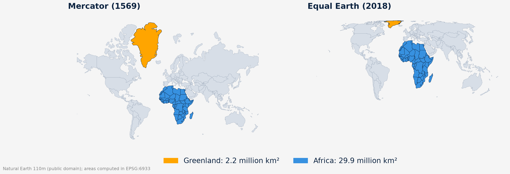</p> </div> --- ## where is the centre of the world? <div class="content" style="display:flex; justify-content:center; align-items:flex-start;"> <p>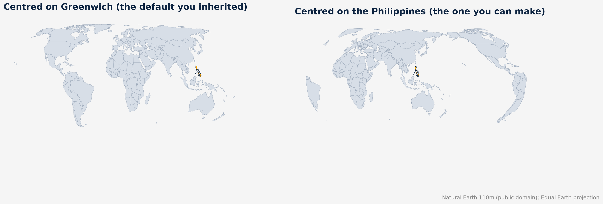</p> </div> --- ## design: same data, three maps <div class="content" style="display:flex; justify-content:center; align-items:flex-start;"> <p>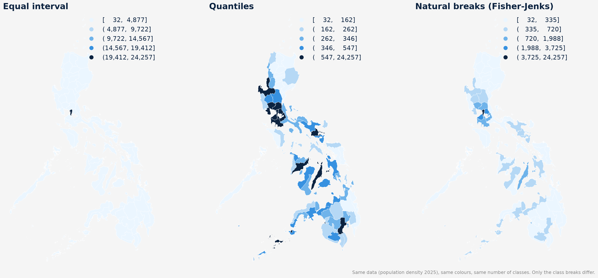</p> </div> **Which one is correct? Hold your answer.** --- ## politics: the cartographer is in the map <div style="display:grid; grid-template-columns: 1fr 1fr 1fr; gap: 28px;"> <div style="background:#fff; border-radius:12px; padding:24px 28px;"><div class="column-header">WHO PAID</div>Murillo Velarde's map is dedicated to the king, and the king's arms sit in the sea. Snow's was for a Board of Health that didn't believe him.</div> <div style="background:#fff; border-radius:12px; padding:24px 28px;"><div class="column-header">WHO DRAWS</div>A Jesuit and a Tagalog engraver. A doctor. A thousand volunteers. A company. A model. Each brings what they know and what they were told to leave out.</div> <div style="background:#fff; border-radius:12px; padding:24px 28px;"><div class="column-header">WHO IT'S FOR</div>A sailor needs Mercator. A student comparing continents needs Equal Earth. This month the UN chose one of them for its own maps, and said why.</div> </div> **No setting removes the person. The question is whether you can see them.** --- <!-- .slide: class="section-slide" data-background-color="#0c2340" --> <h1 style="color: #ffa500">questions so far?</h1> --- <!-- .slide: class="section-slide" data-background-color="#0c2340" --> <span class="section-label">Part 3</span> # the honest<br>cartographer --- ## none is correct. each answers a different question <div class="compact"> | Method | What it does | What it shows well | What it hides | |---|---|---|---| | Equal interval | Splits the range into equal steps | Extremes, outliers | Most provinces land in one class | | Quantiles | Same number of provinces per class | Rank, "top fifth" | Big jumps between neighbours in a class | | Natural breaks | Puts the gaps where the data has gaps | Real clusters | Hard to compare across maps | </div> **The honest move: name the method on the legend.** --- ## a good map answers one question for one reader <div class="two-column"> <div class="column"> <div class="column-header">Same data: flood depth by barangay</div> - A **mayor** deciding where to send pumps - A **scientist** checking a model - A **commuter** at 6 am </div> <div class="column"> <div class="column-header">What changes</div> Which detail survives. How many classes. Which colour means danger. What the title says. What gets left out. </div> </div> --- ## seven ways to say something with ink <div style="display:grid; grid-template-columns: repeat(7, 1fr); gap: 20px; margin-top: 8px;"> <div style="background:#fff; border-radius:12px; padding:20px 12px; text-align:center;"><svg viewBox="0 0 160 110" width="100%"><circle cx="40" cy="70" r="10" fill="#0c2340"/><circle cx="110" cy="35" r="10" fill="#0c2340"/></svg><div style="font-size:20pt; font-weight:700;">position</div></div> <div style="background:#fff; border-radius:12px; padding:20px 12px; text-align:center;"><svg viewBox="0 0 160 110" width="100%"><circle cx="45" cy="55" r="8" fill="#0c2340"/><circle cx="110" cy="55" r="26" fill="#0c2340"/></svg><div style="font-size:20pt; font-weight:700;">size</div></div> <div style="background:#fff; border-radius:12px; padding:20px 12px; text-align:center;"><svg viewBox="0 0 160 110" width="100%"><circle cx="45" cy="55" r="18" fill="#0c2340"/><rect x="92" y="37" width="36" height="36" fill="#0c2340"/></svg><div style="font-size:20pt; font-weight:700;">shape</div></div> <div style="background:#fff; border-radius:12px; padding:20px 12px; text-align:center;"><svg viewBox="0 0 160 110" width="100%"><circle cx="45" cy="55" r="18" fill="#b5d8f5"/><circle cx="110" cy="55" r="18" fill="#0c2340"/></svg><div style="font-size:20pt; font-weight:700;">value</div></div> <div style="background:#fff; border-radius:12px; padding:20px 12px; text-align:center;"><svg viewBox="0 0 160 110" width="100%"><circle cx="45" cy="55" r="18" fill="#3791e0"/><circle cx="110" cy="55" r="18" fill="#ffa500"/></svg><div style="font-size:20pt; font-weight:700;">hue</div></div> <div style="background:#fff; border-radius:12px; padding:20px 12px; text-align:center;"><svg viewBox="0 0 160 110" width="100%"><rect x="30" y="47" width="40" height="14" fill="#0c2340"/><rect x="95" y="35" width="14" height="40" fill="#0c2340"/></svg><div style="font-size:20pt; font-weight:700;">orientation</div></div> <div style="background:#fff; border-radius:12px; padding:20px 12px; text-align:center;"><svg viewBox="0 0 160 110" width="100%"><g fill="#0c2340"><rect x="25" y="35" width="40" height="40"/><g fill="#fff"><rect x="30" y="40" width="4" height="30"/><rect x="40" y="40" width="4" height="30"/><rect x="50" y="40" width="4" height="30"/></g><rect x="95" y="35" width="40" height="40" fill="#0c2340" opacity="0.35"/></g></svg><div style="font-size:20pt; font-weight:700;">texture</div></div> </div> **Shout it: does this variable show a quantity, or a kind?** --- ## a count and a rate, same provinces <div class="content" style="display:flex; justify-content:center; align-items:flex-start;"> <p>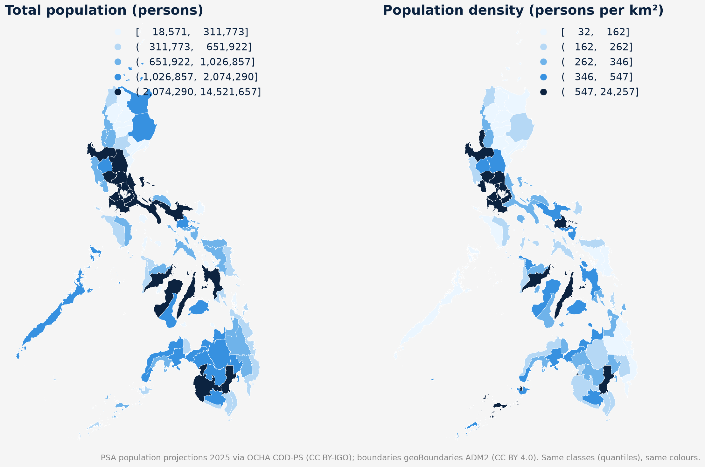</p> </div> --- ## which one is honest? both, if the legend says what it is - A **count** map answers "how many are there" - A **rate** map answers "how concentrated is it" - Large areas always win a count map. That's geometry, not information - Rule: colour fills almost always want a rate. Counts want symbols sized to the number **Is that clear? Tell me what isn't.** --- ## colour is a claim about order <div class="content" style="display:flex; justify-content:center; align-items:flex-start;"> <p>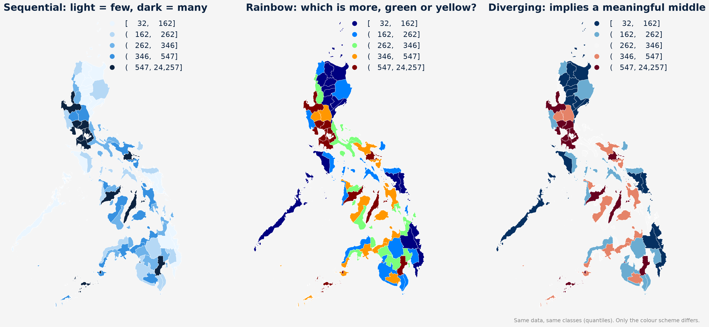</p> </div> --- ## three colour schemes, three jobs <div style="display:grid; grid-template-columns: 1fr 1fr 1fr; gap: 40px; margin-top: 8px;"> <div style="background:#fff; border-radius:12px; padding:28px;"> <div style="display:flex; gap:6px; margin-bottom:20px;"><div style="flex:1;height:64px;background:#EBF6FF"></div><div style="flex:1;height:64px;background:#b5d8f5"></div><div style="flex:1;height:64px;background:#6fb3ea"></div><div style="flex:1;height:64px;background:#3791e0"></div><div style="flex:1;height:64px;background:#0c2340"></div></div> <strong>Sequential</strong><br>Ordered data with a low and a high. Density, rainfall, income. </div> <div style="background:#fff; border-radius:12px; padding:28px;"> <div style="display:flex; gap:6px; margin-bottom:20px;"><div style="flex:1;height:64px;background:#b2182b"></div><div style="flex:1;height:64px;background:#ef8a62"></div><div style="flex:1;height:64px;background:#f7f7f7"></div><div style="flex:1;height:64px;background:#67a9cf"></div><div style="flex:1;height:64px;background:#2166ac"></div></div> <strong>Diverging</strong><br>Only when the middle means something. Change from last year. Above or below average. </div> <div style="background:#fff; border-radius:12px; padding:28px;"> <div style="display:flex; gap:6px; margin-bottom:20px;"><div style="flex:1;height:64px;background:#3791e0"></div><div style="flex:1;height:64px;background:#ffa500"></div><div style="flex:1;height:64px;background:#589632"></div><div style="flex:1;height:64px;background:#6B4C9A"></div><div style="flex:1;height:64px;background:#2EC4B6"></div></div> <strong>Qualitative</strong><br>Kinds, not amounts. Land use, language, party. </div> </div> Check every scheme for colour-blind readers. ColorBrewer does this for free, and it's open. --- ## live: the same map in qgis, three clicks - Open the provinces layer, style by **density** - Equal interval → quantile → natural breaks. Watch the map change - Blues → rainbow → back - Switch the field to **total population**. Same colours, different story --- ## the legend is a contract The legend promises the reader five things: 1. **Units**: people, people per km², pesos, metres 2. **Method**: how the classes were made 3. **Source and date**: whose numbers, from when 4. **Projection**: what the shapes owe to the sheet 5. **What's not shown**: no data is not the same as zero --- ## hierarchy: the eye should land where the question is - **Figure and ground**: the thing you're mapping is dark and sharp; everything else is light and quiet - **Labels** are data too. Every label you add pushes another one out - **Remove until it breaks**, then put one thing back - Beauty is what's left when nothing competes with the answer --- ## the rules exist for the reader <div class="two-column split-2-1"> <div class="column" style="background:none; padding:0;"> <p>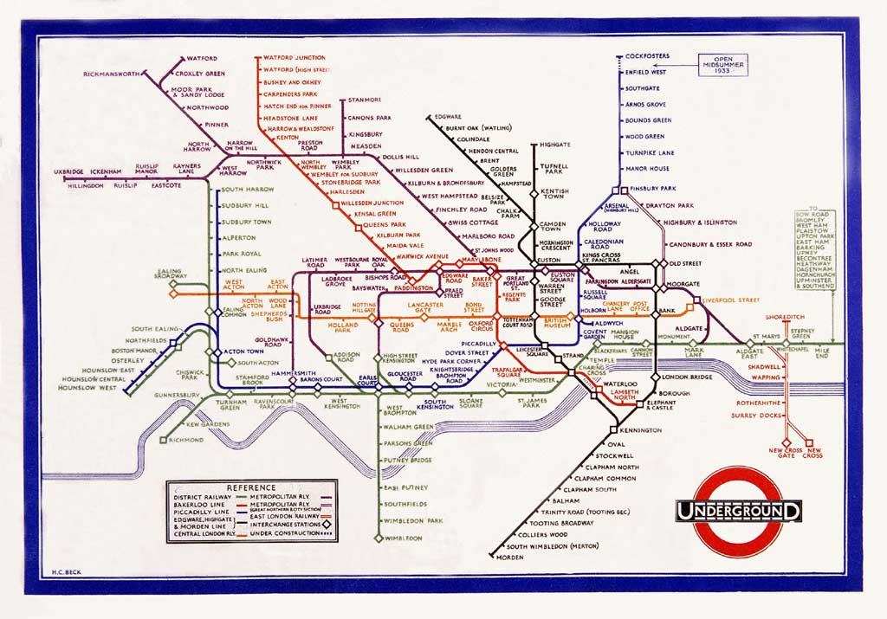</p> </div> <div class="column"> <div class="column-header">Harry Beck, 1933</div> Distances and directions are wrong on purpose. Lines run at 45° and 90°. The centre is stretched, the suburbs squeezed. It answers the only question a passenger has: which line, which change. </div> </div> --- ## the break became the rule, here too <div style="display:grid; grid-template-columns: 1fr 1.7fr; gap: 40px; align-items:start;"> <div><p>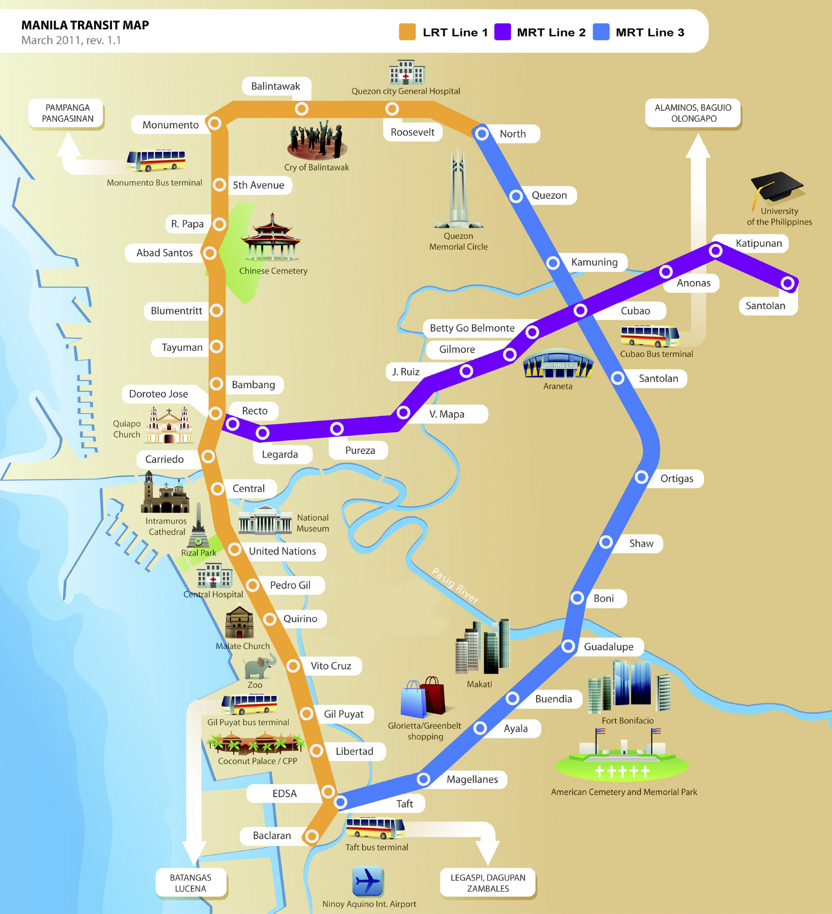</p><div style="font-size:20pt; color:#888; margin-top:12px;">Rule broken: scale. Metro Manila transit map, 2011. Janissimo, CC BY-SA 3.0</div></div> <div><p>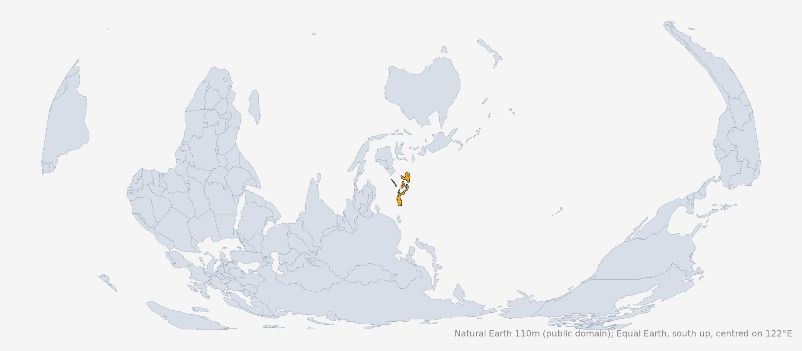</p><div style="font-size:20pt; color:#888; margin-top:12px;">Rule broken: north is up. Same data as the centre-of-the-world map, one axis flipped</div></div> </div> --- ## and beyond transit <div style="display:grid; grid-template-columns: 1fr 1fr; gap: 40px; align-items:start;"> <div><img src="figures/minard-1869.png" alt="Charles Minard's 1869 chart of Napoleon's Russian campaign" style="max-width: 100%; border-radius: 6px;"><div style="font-size:20pt; color:#888; margin-top:12px;">Rule broken: geography is the base. Minard, 1869: the base is the size of the army, on the way to Moscow and back. Public domain</div></div> <div><p>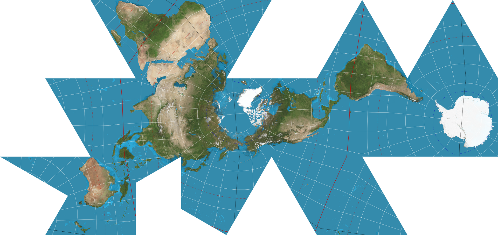</p><div style="font-size:20pt; color:#888; margin-top:12px;">Rule broken: one continuous sheet with an up. Fuller's Dymaxion: the globe unfolded from an icosahedron, no north, no split ocean. Justin Kunimune, public domain</div></div> </div> --- ## break the rules in the open <div style="display:grid; grid-template-columns: 1fr 1fr 1fr; gap: 28px;"> <div style="background:#fff; border-radius:12px; padding:26px 30px;"><div style="font-size:24pt; font-weight:700; line-height:1.3;">“If a rule prevents you from improving or maintaining Wikipedia, ignore it.”</div><div style="font-size:17pt; color:#888; margin-top:14px;">Wikipedia, <em>Ignore all rules</em>. One of its five pillars</div></div> <div style="background:#fff; border-radius:12px; padding:26px 30px;"><div style="font-size:24pt; font-weight:700; line-height:1.3;">“By all means break the rules, and break them beautifully, deliberately and well.”</div><div style="font-size:17pt; color:#888; margin-top:14px;">Robert Bringhurst, <em>The Elements of Typographic Style</em></div></div> <div style="background:#fff; border-radius:12px; padding:26px 30px;"><div style="font-size:24pt; font-weight:700; line-height:1.3;">“Breaking the rules only helps if you already know what you’re doing.”</div><div style="font-size:17pt; color:#888; margin-top:14px;">House rule for this afternoon</div></div> </div> **A broken rule the legend explains is design. A broken rule nobody can see is a lie.** --- ## seven questions to ask any map 1. Who made it, and for whom? 2. What's the unit: a person, a household, a province? 3. Counts or rates? 4. How were the classes made? 5. What's missing, and is "no data" marked? 6. Whose numbers, from when? 7. What does the projection do to size and shape? --- <!-- .slide: class="section-slide" data-background-color="#0c2340" --> <h1 style="color: #ffa500">questions so far?<br><span style="font-size: 0.5em; color: #f5f5f5;">then five minutes to stand up</span></h1> --- <!-- .slide: class="section-slide" data-background-color="#0c2340" --> <span class="section-label">Part 4</span> # maps as<br>politics, today --- ## a projection is a message <div style="display:grid; grid-template-columns: 1fr 1fr; gap: 28px;"> <div style="background:#fff; border-radius:12px; padding:22px 28px; border-left:6px solid #3791e0;"><div style="font-size:17pt; color:#888;">CNN · 4 September 2026</div><div style="font-size:23pt; font-weight:700; line-height:1.25; margin-top:6px;"><a href="https://edition.cnn.com/2026/09/04/world/un-vote-new-world-map-intl-scli" target="_blank" rel="noopener" style="color:inherit; text-decoration:none;">“UN votes to adopt new map that makes our world look very different” <span style="color:#3791e0; font-size:0.75em;">↗</span></a></div></div> <div style="background:#fff; border-radius:12px; padding:22px 28px; border-left:6px solid #3791e0;"><div style="font-size:17pt; color:#888;">NPR · 4 September 2026</div><div style="font-size:23pt; font-weight:700; line-height:1.25; margin-top:6px;"><a href="https://www.npr.org/2026/09/04/nx-s1-5958611/africa-world-map-un-vote" target="_blank" rel="noopener" style="color:inherit; text-decoration:none;">“The U.N. backs a new world map showing Africa in its true relative size” <span style="color:#3791e0; font-size:0.75em;">↗</span></a></div></div> </div> - General Assembly, 164 for, 1 against, 6 abstaining. Brought by Togo for the 54 African states - Discourages Mercator for anything but navigation; asks for equal-area maps and names Equal Earth - The one vote against: the United States --- ## three ways lines get drawn on you <div style="display:grid; grid-template-columns: 1fr 1fr 1fr; gap: 28px; margin-top: 8px;"> <div style="background:#fff; border-radius:12px; padding:28px 32px;"><div style="color:#3791e0; font-weight:800; font-size:22pt;">A · LINES BEFORE THE VOTE</div>From the 1812 Gerry-mander to Camarines Sur, Dinagat, and a region drawn by ballot.</div> <div style="background:#fff; border-radius:12px; padding:28px 32px;"><div style="color:#3791e0; font-weight:800; font-size:22pt;">B · LINES THAT DECIDE WHERE YOU LIVE</div>Redlining in the 1930s, and forty metres from the shore after Yolanda.</div> <div style="background:#fff; border-radius:12px; padding:28px 32px;"><div style="color:#3791e0; font-weight:800; font-size:22pt;">C · AGNOSTIC CARTOGRAPHY</div>Kashmir and Crimea on your phone, and whose Sabah it shows you.</div> </div> Each case: one example from elsewhere, one from here, one question for the room. --- <!-- .slide: class="subsection-slide" data-background-color="#0c2340" --> <span class="section-label">Case A</span> # lines before the vote --- ## draw the district and you draw the winner <div class="two-column"> <div class="column"> <div class="column-header">ELSEWHERE</div> - 1812: a Massachusetts district shaped like a salamander. A newspaper names the Gerry-mander - Same voters, different lines, different result. Software made it precise; open data made it visible </div> <div class="column"> <div class="column-header">HERE</div> - Camarines Sur, 2009: two districts become three, the new one with 176,383 people. The Supreme Court upheld it; the 250,000 floor is for cities - Dinagat Islands: 802 km² against a 2,000 km² floor. Struck down in 2010, restored in 2011 - 2019: 63 Cotabato barangays voted themselves into the Bangsamoro region. A line drawn by the people inside it </div> </div> **Who drew the line around your district, and when?** --- <!-- .slide: class="subsection-slide" data-background-color="#0c2340" --> <span class="section-label">Case B</span> # lines that decide where you live --- ## a line on a map decides who lives where <div class="two-column"> <div class="column"> <div class="column-header">ELSEWHERE</div> - US HOLC maps, 1935 to 1940: neighbourhoods graded A to D; the red D followed race more than risk - Banks refused loans on it for decades. Secret then, open now, so the harm can be measured </div> <div class="column"> <div class="column-header">HERE</div> - December 2013, weeks after Yolanda: a 40-metre no-build zone on the Leyte and Samar coasts; about 7,300 Tacloban families inside it - 2014: softened to a "no dwelling zone" after businesses objected. Buildings allowed, homes not - Tacloban's mayor: elevation, not distance, measures risk </div> </div> **Which map decides where you may live: hazard, zoning, or the one drawn the week after the storm?** --- <!-- .slide: class="subsection-slide" data-background-color="#0c2340" --> <span class="section-label">Case C</span> # agnostic cartography --- ## one map, a different truth for each viewer <div style="display:grid; grid-template-columns: 1.2fr 1fr; gap: 32px; align-items:start;"> <div style="background:#fff; border-radius:12px; padding:22px 28px; border-left:6px solid #3791e0;"><div style="font-size:17pt; color:#888;">The Washington Post · 14 February 2020</div><div style="font-size:23pt; font-weight:700; line-height:1.25; margin-top:6px;"><a href="https://www.washingtonpost.com/technology/2020/02/14/google-maps-political-borders/" target="_blank" rel="noopener" style="color:inherit; text-decoration:none;">“Crimea, Kashmir, Korea — Google redraws disputed borders, depending on who’s looking” <span style="color:#3791e0; font-size:0.75em;">↗</span></a></div><div style="font-size:19pt; color:#555; margin-top:14px;">Google: it stays “neutral” on disputes, draws them as dashed grey lines, and follows local law where it operates.</div></div> <div style="background:#fff; border-radius:12px; padding:22px 28px;"><div class="column-header">WHAT YOUR LOCATION CHANGES</div> <div style="font-size:21pt; line-height:1.45;">Kashmir: solid Indian border in India, disputed elsewhere<br>Crimea: Russian in Russia, disputed elsewhere<br>Sea of Japan or East Sea, by country<br>Persian Gulf or Arabian Gulf, by country<br>Gulf of Mexico or Gulf of America, by country</div></div> </div> **“Agnostic” is a stance too: one cartographer, every side's map, and a rule nobody outside can read.** --- ## the border depends on who is looking <div class="two-column"> <div class="column"> <div class="column-header">ELSEWHERE</div> - Kashmir: dotted for the world, a solid Indian border in India, different again in Pakistan - Crimea: Russian in Russia, disputed elsewhere. One company, several truths, a rule you can't read </div> <div class="column"> <div class="column-header">HERE</div> - RA 5446 (1968) reserves the Sabah claim; the 2009 baselines law left Sabah out, claim intact - February 2026: a NAMRIA map showing Sabah reopened the debate. DFA: a planning tool, not a maritime chart - Google draws Sabah as Malaysia by a rule it won't publish. OpenStreetMap draws the same line by a rule it does: on the ground, disputes tagged </div> </div> **Same line, two reasons. Which one can you argue with?** --- ## names are claims - Executive Order 25 (2017): Benham Rise became the Philippine Rise. Nothing moved. The label did - A name says whose place it is, in whose language - Who gets to decide? A state, a company, the UN, or the people who live there --- ## the same water, renamed by decree <div style="display:grid; grid-template-columns: 1fr 1fr; gap: 24px;"> <div style="background:#fff; border-radius:12px; padding:22px 28px; border-left:6px solid #ffa500;"><div style="font-size:17pt; color:#888;">Truth Social post · 25 August 2026</div><div style="font-size:21pt; line-height:1.3; margin-top:6px;"><a href="https://www.snopes.com/fact-check/lake-america-trump/" target="_blank" rel="noopener" style="color:inherit; text-decoration:none;">“The United States is giving serious consideration to changing the name of Lake Ontario to Lake America in that we don’t expect to be doing much business with Ontario any longer” <span style="color:#3791e0; font-size:0.75em;">↗</span></a></div></div> <div style="background:#fff; border-radius:12px; padding:22px 28px; border-left:6px solid #3791e0;"><div style="font-size:17pt; color:#888;">ABC News · 27 August 2026</div><div style="font-size:23pt; font-weight:700; line-height:1.25; margin-top:6px;"><a href="https://abcnews.com/Politics/trump-signs-executive-order-renaming-lake-ontario-lake/story?id=136009323" target="_blank" rel="noopener" style="color:inherit; text-decoration:none;">“Trump signs executive order renaming Lake Ontario to ‘Lake America’” <span style="color:#3791e0; font-size:0.75em;">↗</span></a></div></div> <div style="background:#fff; border-radius:12px; padding:22px 28px; border-left:6px solid #3791e0;"><div style="font-size:17pt; color:#888;">CBC News · August 2026</div><div style="font-size:23pt; font-weight:700; line-height:1.25; margin-top:6px;"><a href="https://www.cbc.ca/news/world/trump-lake-ontario-america-9.7322947" target="_blank" rel="noopener" style="color:inherit; text-decoration:none;">“‘Real foolishness’: Canadian officials reject Trump attempt to rename Lake Ontario as ‘Lake America’” <span style="color:#3791e0; font-size:0.75em;">↗</span></a></div></div> <div style="background:#fff; border-radius:12px; padding:22px 28px; border-left:6px solid #3791e0;"><div style="font-size:17pt; color:#888;">The Hill · 9 May 2025</div><div style="font-size:23pt; font-weight:700; line-height:1.25; margin-top:6px;"><a href="https://thehill.com/policy/technology/5293012-mexico-sues-google-over-gulf-of-america-label-change/" target="_blank" rel="noopener" style="color:inherit; text-decoration:none;">“Mexico sues Google over ‘Gulf of America’ label change” <span style="color:#3791e0; font-size:0.75em;">↗</span></a></div></div> </div> --- ## the same sea, renamed by your phone <div style="display:grid; grid-template-columns: 1fr 1fr 1fr; gap: 24px;"> <div style="background:#fff; border-radius:12px; padding:22px 28px; border-left:6px solid #3791e0;"><div style="font-size:17pt; color:#888;">Philstar · 14 April 2025</div><div style="font-size:23pt; font-weight:700; line-height:1.25; margin-top:6px;"><a href="https://www.philstar.com/headlines/2025/04/14/2435990/west-philippine-sea-label-seen-google-maps-google-earth" target="_blank" rel="noopener" style="color:inherit; text-decoration:none;">“‘West Philippine Sea’ label seen on Google Maps, Google Earth” <span style="color:#3791e0; font-size:0.75em;">↗</span></a></div></div> <div style="background:#fff; border-radius:12px; padding:22px 28px; border-left:6px solid #3791e0;"><div style="font-size:17pt; color:#888;">GMA News · 30 April 2025</div><div style="font-size:23pt; font-weight:700; line-height:1.25; margin-top:6px;"><a href="https://www.gmanetwork.com/news/topstories/nation/944509/west-philippine-sea-label-disappears-from-google-maps/story/" target="_blank" rel="noopener" style="color:inherit; text-decoration:none;">“‘West Philippine Sea’ label disappears from Google Maps” <span style="color:#3791e0; font-size:0.75em;">↗</span></a></div></div> <div style="background:#fff; border-radius:12px; padding:22px 28px; border-left:6px solid #3791e0;"><div style="font-size:17pt; color:#888;">Rappler · 1 May 2025</div><div style="font-size:23pt; font-weight:700; line-height:1.25; margin-top:6px;"><a href="https://www.rappler.com/technology/west-philippine-sea-missing-google-maps-april-2025/" target="_blank" rel="noopener" style="color:inherit; text-decoration:none;">“‘West Philippine Sea’ returns to Google Maps after ‘technical issue’” <span style="color:#3791e0; font-size:0.75em;">↗</span></a></div></div> </div> Google's statement: the sea “has always been labeled”; the label was “made easier to see”. --- ## exercise: name this sea <div class="content" style="display:flex; justify-content:center; align-items:flex-start;"> <p>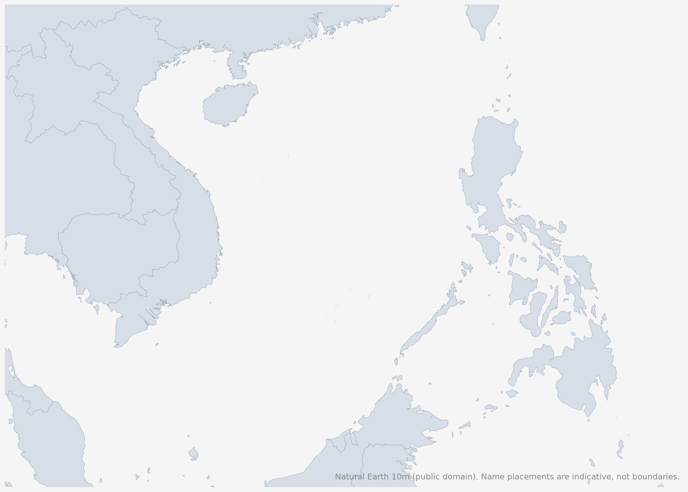</p> </div> --- ## one sea, five names <div class="content" style="display:flex; justify-content:center; align-items:flex-start;"> <p>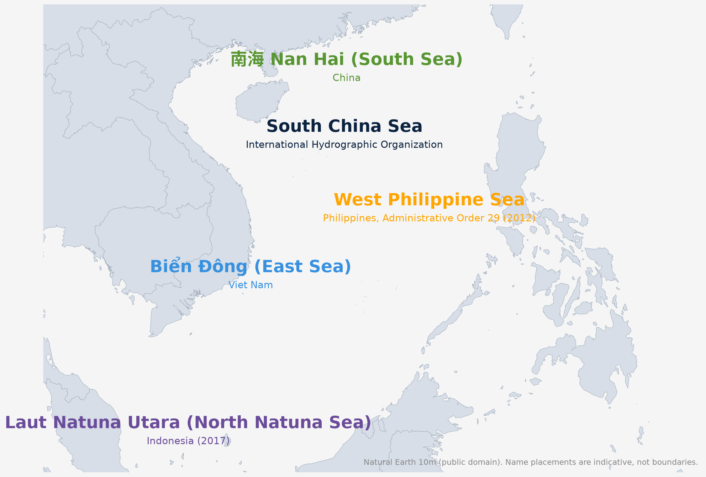</p> </div> --- ## names that come home <div style="display:grid; grid-template-columns: 1fr 1fr 1fr; gap: 24px;"> <div style="background:#fff; border-radius:12px; padding:22px 28px;"><div class="column-header">RESTORED</div><strong>Naoero</strong>, formerly Nauru. Official 3 August 2026 by constitutional amendment: the name colonial officials could not pronounce, spelled the way its people say it. Country code NRU to NRO.</div> <div style="background:#fff; border-radius:12px; padding:22px 28px;"><div class="column-header">PROPOSED</div><strong>Aotearoa</strong>. A 70,047-signature petition to rename New Zealand, delivered to Parliament in 2022. Still a proposal, not a change.</div> <div style="background:#fff; border-radius:12px; padding:22px 28px;"><div class="column-header">REBRANDED</div><strong>Türkiye</strong>, formerly Turkey at the UN. 2 June 2022. A state asking to be called by its own name in its own language.</div> </div> **The Philippines is named after Philip II of Spain. Discuss.** --- <!-- .slide: class="section-slide" data-background-color="#0c2340" --> <h1 style="color: #ffa500">questions so far?</h1> --- <!-- .slide: class="section-slide" data-background-color="#0c2340" --> <span class="section-label">Part 5</span> # who holds<br>the pen now --- ## decolonising the map: read it, redraw it, rename it <div style="display:grid; grid-template-columns: 1fr 1fr 1fr; gap: 28px;"> <div style="background:#fff; border-radius:12px; padding:24px 28px;"><div class="column-header">READ IT</div><strong>Critical cartography.</strong> Harley, 1989, <em>Deconstructing the Map</em>: a map is a text with an author, a patron and silences. You did this to Murillo in part 1.</div> <div style="background:#fff; border-radius:12px; padding:24px 28px;"><div class="column-header">REDRAW IT</div><strong>Counter-mapping.</strong> Peluso, 1995: Kalimantan villagers mapped their forests against the state's concession maps. Here, ancestral domains under IPRA since 1997.</div> <div style="background:#fff; border-radius:12px; padding:24px 28px;"><div class="column-header">RENAME IT</div><strong>Naming back.</strong> Naoero. “Our ancestors discovered Magellan.” The Philippine Rise. A label is the cheapest map to redraw and the hardest to ignore.</div> </div> **Decolonising a map is not deleting the old one. It's putting a second map on the table, made by the people the first one drew as empty.** --- ## counter-mapping: the same tools, the other hand <div class="two-column"> <div class="column"> <div class="column-header">NEW CLARK CITY, 2018–2019</div> - The plan: 9,450 hectares of "green city" in Capas, Tarlac, on land shown as available - UP Geography, with Glasgow and the PGS, spent six months with the people on that land: some 15,000 farmers and 20,000 Aeta and Abeling - Their maps went up at Palma Hall, 26 July 2019, beside the plan </div> <div class="column"> <div class="column-header">CONTOUR, SINCE 2010</div> - JPGS's *Mapping for the People*: GIS with the community, not for it - Hacienda Luisita: who works the land, against who holds the title - Sitio San Roque, 2015: the everyday spaces of a community the plan drew as empty </div> </div> **Whose land is this? The plan and the counter-map answer differently. Both are maps.** --- ## your card was a counter-map, or it wasn't - Your campus card had silences: the communities inside it, the paths you walk, the people who sell you lunch - A counter-map starts there. It draws what the official map left out, with the people it left out - Ancestral domain maps under IPRA did this from the 1990s: "empty" land became named, bounded, titled land - The Haiyan mappers in part 1 did it at speed, from anywhere **Who is missing from the official map of your hometown?** --- ## then the pen passed to a platform - The map you use most is made by a company, under rules you can't read, and it changes without telling you - Its borders are per viewer and it calls that neutral; its labels come and go; its classification is a secret - It is also the best-maintained map most people have ever had. That is why it holds the pen **Every silence on it is a decision nobody in this room can appeal.** --- ## and now to a machine <div class="two-column"> <div class="column"> <div class="column-header">WHAT AI DOES IN MAPPING TODAY</div> - Traces buildings and roads from imagery (HOT's fAIr, open source, community-trained) - Draws flood extents from radar in hours (UNOSAT's model; PhilSA for Typhoon Inday, July 2026) - Generalises, labels, picks colours inside GIS software - Generates map-shaped images from a sentence </div> <div class="column"> <div class="column-header">WHAT CHANGED</div> Speed, and who holds the pen. For the first time the cartographer can be nobody: a prompt, a model, a picture that looks like a map. </div> </div> --- ## the seven questions, asked of a machine <div class="compact"> | Ask any map | A generated map answers | |---|---| | Who made it, and for whom? | A prompt. For nobody | | What's the unit? | It doesn't have one | | Counts or rates? | It doesn't know the difference | | How were the classes made? | There is no method to name | | What's missing, and is it marked? | It can't tell you what it left out | | Whose numbers, from when? | Whatever pictures it was trained on | | What does the projection do? | Whatever the pictures did | </div> --- ## published without a person <div style="display:grid; grid-template-columns: 1fr 1fr; gap: 24px;"> <div style="background:#fff; border-radius:12px; padding:22px 28px; border-left:6px solid #3791e0;"><div style="font-size:17pt; color:#888;">NBC News · 30 July 2026</div><div style="font-size:23pt; font-weight:700; line-height:1.25; margin-top:6px;"><a href="https://www.nbcnews.com/politics/trump-administration/us-government-map-africa-mislabels-every-country-global-conference-rcna590153" target="_blank" rel="noopener" style="color:inherit; text-decoration:none;">“State Department map of Africa mislabels every country at AIDS conference” <span style="color:#3791e0; font-size:0.75em;">↗</span></a></div></div> <div style="background:#fff; border-radius:12px; padding:22px 28px; border-left:6px solid #ffa500;"><div style="font-size:17pt; color:#888;">VERA Files · 13 December 2025</div><div style="font-size:23pt; font-weight:700; line-height:1.25; margin-top:6px;"><a href="https://verafiles.org/articles/fact-check-video-about-super-typhoon-yasmin-fake" target="_blank" rel="noopener" style="color:inherit; text-decoration:none;">“FACT CHECK: Video about ‘Super Typhoon Yasmin’ FAKE” <span style="color:#3791e0; font-size:0.75em;">↗</span></a></div></div> </div> A government slide with Nigeria landlocked in the Sahara, added minutes before the talk. A PAGASA-style advisory for a typhoon that did not exist, seen 197,000 times before the fact check. **Neither is a technology failure. Each is a person who did not look.** --- ## machines draw, a person signs - The model drafts. A person decides, and puts their name on it - The signing is real only if the person can refuse: see what went in, check what came out, run it themselves - If it runs on your own machine, it can be inspected on your own machine. Open weights, local, no account - Add a sixth line to the legend: **what the machine did, and who checked it** **Think for yourself. Don't be the meat proxy that carries a machine's map into the room.** --- <!-- .slide: class="section-slide" data-background-color="#0c2340" --> <h1 style="color: #ffa500">questions so far?</h1> --- <!-- .slide: class="section-slide" data-background-color="#0c2340" --> <span class="section-label">Part 6</span> # own your maps --- ## if you can't inspect it, you can't contest it - Every map this morning was somebody's argument: Snow's, Murillo's, the plan for New Clark City, the machine's - The ones you could argue with had one thing in common: you could see the choices - Open data lets you see the choices. Open tools let you make different ones. Open licences let you share them back --- ## wrong in the open is fixable <div class="two-column split-2-1"> <div class="column" style="background:none; padding:0;"> <p>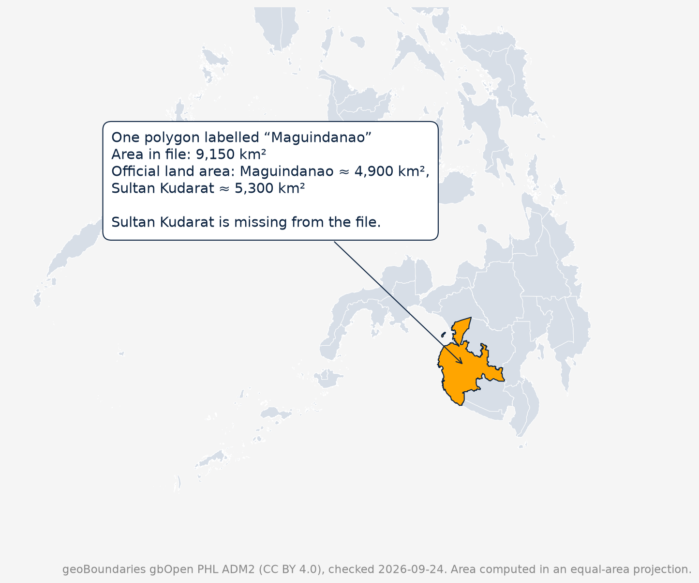</p> </div> <div class="column"> <div class="column-header">Found while making these slides</div> An open, CC BY boundary file of Philippine provinces has **no Sultan Kudarat**. The Maguindanao polygon covers both. I could see it, measure it, and report it. Try that with the map on your phone. </div> </div> --- ## the open stack this deck was made with <div style="display:grid; grid-template-columns: 1fr 1fr 1fr; gap: 40px;"> <div style="background:#fff; border-radius:12px; padding:28px 32px;"><div class="column-header">OPEN DATA</div>PSA and NAMRIA boundaries via OCHA and geoBoundaries · OpenStreetMap · Natural Earth · public-domain archives</div> <div style="background:#fff; border-radius:12px; padding:28px 32px;"><div class="column-header">OPEN TOOLS</div>QGIS · GDAL · Python with GeoPandas · ColorBrewer · reveal.js</div> <div style="background:#fff; border-radius:12px; padding:28px 32px;"><div class="column-header">OPEN STANDARDS</div>GeoPackage · GeoJSON · WMS and WFS · CC BY and ODbL licences</div> </div> Every map you saw this morning can be re-made, checked, and disagreed with by you, this afternoon. --- <!-- .slide: class="subsection-slide" data-background-color="#0c2340" --> <span class="section-label">Part 6</span> # caretography --- ## marginalised people are marginalised mappers - The map reflects who holds the pen. Estimates of women among OpenStreetMap contributors run from **2 to 13 percent**, depending on the survey - So the map has bars, roads and car parks, and is thin on clinics, lactation rooms, safe spaces and step-free routes. Not malice. Absence - GeoChicas (2016, Latin America) mapped the gap and then the streets named after women. The fix on an open map is not a petition. It's a mapathon **A silence on the map is usually an empty chair at the mapping party. Who isn't in this room?** --- ## mapping what the official map has no category for <div style="display:grid; grid-template-columns: 1fr 1fr; gap: 24px;"> <div style="background:#fff; border-radius:12px; padding:20px 28px;"><div class="column-header">MAPBEKS</div>LGBTQ+ safe spaces, HIV testing and HRT facilities, mapped by the community that needs them</div> <div style="background:#fff; border-radius:12px; padding:20px 28px;"><div class="column-header">MAPABABAE · 6 MARCH 2021</div>Lactation stations, birthing facilities, gender-neutral bathrooms, in one afternoon</div> <div style="background:#fff; border-radius:12px; padding:20px 28px;"><div class="column-header">MENTAL HEALTH AWHERENESS</div>A volunteer map of mental health services, when no official one was findable</div> <div style="background:#fff; border-radius:12px; padding:20px 28px;"><div class="column-header">MAPATANDA · 2021</div>Mapping with and for the ageing: ramps, clinics, pension counters</div> </div> **On a proprietary map the categories are the company's. On an open one, a lactation station exists because someone cared.** --- ## when the state is slow, the map is fast - 14 April 2021: a cart of vegetables on Maginhawa Street. Within days, hundreds of community pantries - By 20 April there was a map of them, on OpenStreetMap, built by Ministry of Mapping, Mental Health AWHEREness, MapBeks, this department, GSUP and the PH open-mapping community, with Rappler - Nobody asked permission. Nobody needed a category. The pantries were on the map before most were on the news **Care also means restraint: some communities do not want to be mapped, and some mapping puts the mapper in danger. Ask first.** --- <!-- .slide: class="section-slide" data-background-color="#0c2340" --> # build communities --- ## be an advocate - Teach the people around you to read a map as an argument: who paid, who drew it, who it's for, and what it leaves out. - Be patient and understanding. Most people trust the map on their phone. Show them that there's a better way. - Speak up when maps (a line, a name, or a silence) is used against people. - Support the communities that map in the open and with care. Show up, add what's missing, ask first. --- ## the local open mapping community <div style="display:flex; justify-content:center; align-items:flex-start;"> <p>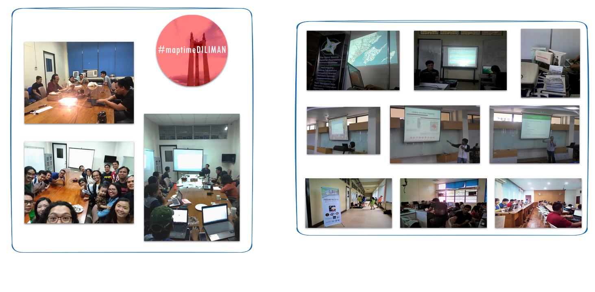</p> </div> <div style="text-align:right; font-size:26pt; font-weight:700; margin-top:8px;">from hosting local meetups...</div> --- ## the local open mapping community <div style="display:flex; justify-content:center; align-items:flex-start;"> <p>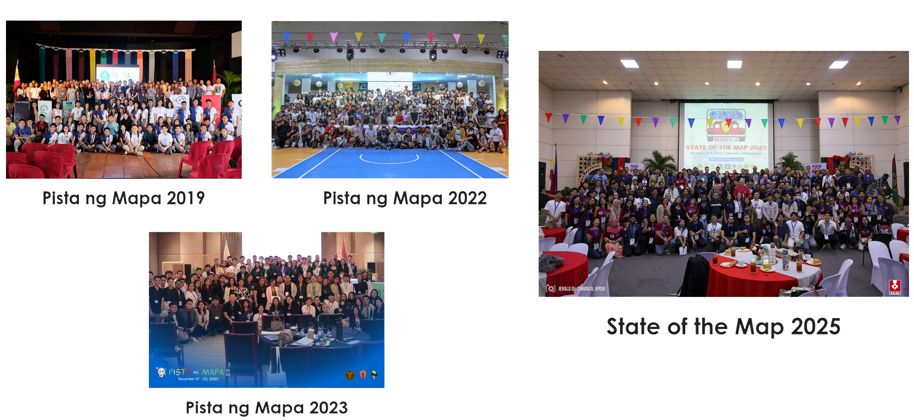</p> </div> <div style="text-align:right; font-size:26pt; font-weight:700; margin-top:8px;">... to international conferences!</div> --- ## exit ticket <div class="callout"> On your card, two lines: <br><br> 1. One map you'll read differently from now on. <br> 2. One question you still have. </div> Leave the card at the door. --- ## everything in this deck, with links <div style="font-size:34pt; font-weight:800; margin-bottom:20px;"><a href="resources.html" target="_blank" rel="noopener" style="color:#0c2340; text-decoration:none;">resources.html <span style="color:#3791e0; font-size:0.75em;">↗</span></a></div> - Every headline on these slides, linked to the article - The quotes and papers: Short, Harley, Peluso, Garcia and Dittus - The department's counter-maps and the caretography groups - The open data and free software behind every figure, and the deck itself --- <!-- .slide: class="section-slide" data-background-color="#0c2340" --> <h1 style="color: #ffa500">questions?</h1> --- <!-- .slide: class="section-slide" data-background-color="#0c2340" --> # maraming salamat.<br><span style="font-size:0.45em; color:#3791e0; letter-spacing:-0.05rem; font-weight:600;">humayo kayo at magpaka-open source</span>